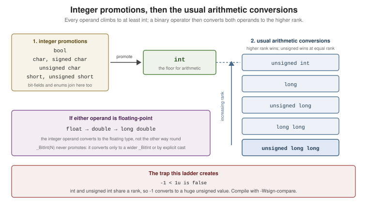

Basic Types and Values
|
This content was generated with the assistance of AI and should be verified against the official documentation before being relied on in production. |
C’s types describe two things at once: the values a program computes with, and the representation those values have in memory. Most of C’s reputation for sharp edges comes from places where those two views disagree — signed overflow, narrowing conversions, and the promotion rules below.
The Abstract State Machine
The standard does not describe your CPU. It describes an abstract machine whose observable behavior — I/O, volatile accesses, and the state at program exit — an implementation must reproduce. Everything else
(register allocation, instruction order, whether an addition happens at all) is free.
Three consequences run through every page in this section:
-
Types have values and representations.
intmeans "an integer in at least the range ±32767"; that it is usually 32 bits of two’s complement is a property of the implementation, though C23 finally requires two’s complement for signed integers. -
Some operations have no defined result. Signed overflow, reading an uninitialized object, dereferencing a null pointer — these are undefined behavior, and the optimizer is entitled to assume they never happen. See Error Handling and Program Failure.
-
sizeofand<limits.h>are the portable way to ask, never a guess.
bool
In C23 bool, true and false are keywords; <stdbool.h> still exists and is now redundant. bool
converts any scalar to 0 or 1 — which makes it the only integer type that never truncates surprisingly:
#include <stdio.h>
int main(void)
{
bool flag = true;
bool from_int = 256; // any nonzero value becomes true (1), not 0
bool from_ptr = "text"; // any non-null pointer becomes true
printf("%d %d %d %zu\n", (int)flag, (int)from_int, (int)from_ptr, sizeof(bool));
return 0;
}sizeof(bool) is 1 on every mainstream implementation but is not required to be. Before C23, write _Bool or
include <stdbool.h>.
Character Types
There are three distinct character types, and the plain one has implementation-defined signedness:
| Type | Signedness | Use it for |
|---|---|---|
|
Implementation-defined (signed on x86 Linux, unsigned on ARM Linux) |
Text, and only text. |
|
Signed, at least -127..127 |
Small signed integers. |
|
Unsigned, 0.. |
Raw bytes — the object-representation type. |
#include <ctype.h>
#include <limits.h>
#include <stdio.h>
int main(void)
{
char c = 'A';
unsigned char byte = 0xFF;
// <ctype.h> takes an int that must be representable as unsigned char (or EOF):
// cast through unsigned char, or a negative plain char is undefined behavior.
int upper = toupper((unsigned char)c);
printf("CHAR_BIT=%d c=%c upper=%c byte=%u char is %s\n",
CHAR_BIT, c, upper, byte, (char)-1 < 0 ? "signed" : "unsigned");
return 0;
}CHAR_BIT is at least 8 and is 8 everywhere that matters. A char is by definition one byte, so
sizeof(char) == 1 always.
Signed and Unsigned Integers
The standard specifies minimum ranges and a rank ordering, not exact widths:
| Type | Minimum width | Typical (LP64) | Range macro |
|---|---|---|---|
|
8 bits |
8 bits |
|
|
16 bits |
16 bits |
|
|
16 bits |
32 bits |
|
|
32 bits |
64 bits (32 on Windows) |
|
|
64 bits |
64 bits |
|
Each has an unsigned counterpart with the same width and range 0..2^N-1. The two behave fundamentally
differently on overflow:
#include <limits.h>
#include <stdio.h>
int main(void)
{
unsigned int u = UINT_MAX;
u += 1; // defined: wraps modulo 2^N, u == 0
int i = INT_MAX;
// i += 1; // UNDEFINED BEHAVIOR -- not "wraps to INT_MIN"
(void)i;
printf("wrapped unsigned = %u\n", u);
return 0;
}Signed overflow is undefined, which is why -fsanitize=undefined exists and why
if (x + 1 < x) cannot be used to detect it — the compiler folds it to false. Use
<stdckdint.h> (see Numbers and Math) or check before the
operation.
Fixed-Width Integers — <stdint.h>
When the width matters — file formats, wire protocols, hardware registers — name it:
#include <inttypes.h>
#include <stddef.h>
#include <stdint.h>
#include <stdio.h>
int main(void)
{
int32_t exact = -2147483648; // exactly 32 bits, or the type does not exist
uint_least16_t at_least = 65535; // smallest type with >= 16 bits
uint_fast8_t fastest = 255; // fastest type with >= 8 bits
intmax_t widest = INTMAX_MAX; // widest signed integer type
size_t count = 3; // result of sizeof; unsigned
ptrdiff_t delta = -1; // pointer difference; signed
uintptr_t as_int = (uintptr_t)&count; // an integer wide enough to hold a pointer
printf("%" PRId32 " %u %u %" PRIdMAX " %zu %td %" PRIuPTR "\n",
exact, (unsigned)at_least, (unsigned)fastest, widest, count, delta, as_int);
return 0;
}-
intN_t/uintN_tare optional — butint8_t…int64_texist on every ordinary platform. -
intptr_t/uintptr_tare the only correct way to hold a pointer in an integer. -
Print them with the
<inttypes.h>macros (PRId32,PRIu64, …);%dfor anint32_tis wrong on a platform where it is along. -
size_tfor sizes and indices,ptrdiff_tfor differences:%zuand%td.
Bit-Precise Integers — _BitInt(N) (C23)
C23 adds integers of an exact bit width, including widths no hardware has:
#include <limits.h>
#include <stdio.h>
int main(void)
{
_BitInt(12) small = 2047; // exactly 12 bits, signed
unsigned _BitInt(3) tiny = 7; // exactly 3 bits, unsigned
_BitInt(128) huge = 170141183460469231731687303715884105727wb; // wb suffix
printf("%d %u %d\n", (int)small, (unsigned)tiny, (int)(huge >> 120));
printf("BITINT_MAXWIDTH = %d\n", (int)BITINT_MAXWIDTH);
return 0;
}Two rules make _BitInt different from everything else: it does not participate in the integer promotions
(a _BitInt(3) stays 3 bits in arithmetic), and it has no default printf conversion — cast it to print it.
Use it for bitfield-heavy protocol code and fixed-point maths, not as a general integer.
Floating-Point Types
| Type | Typical | Notes |
|---|---|---|
|
IEEE-754 binary32 |
~7 decimal digits. |
|
IEEE-754 binary64 |
~15 decimal digits; the default for floating-point constants and maths functions. |
|
80-bit x87 on x86 Linux, = |
Print with |
C23 optionally adds _Float16, _Float32, _Float64, _Float128 and the decimal types _Decimal32/64/128,
each guarded by a feature macro. <float.h> describes what you actually have:
#include <float.h>
#include <math.h>
#include <stdio.h>
int main(void)
{
printf("double: %d decimal digits, epsilon %g, max %g\n", DBL_DIG, DBL_EPSILON, DBL_MAX);
double a = 0.1 + 0.2;
printf("0.1 + 0.2 == 0.3 ? %s\n", a == 0.3 ? "yes" : "no"); // no
printf("close enough ? %s\n", fabs(a - 0.3) < 8 * DBL_EPSILON ? "yes" : "no");
printf("nan is unordered: %s\n", (NAN == NAN) ? "equal" : "never equal");
printf("isnan says %d, isinf says %d\n", isnan(NAN), isinf(1.0 / 0.0));
return 0;
}Constant Types
The type of a constant is not always the obvious one, and it is decided before any assignment:
| Constant | Type |
|---|---|
|
|
|
|
|
|
|
|
|
|
|
|
|
|
|
|
|
|
|
|
#include <stdio.h>
int main(void)
{
printf("sizeof('A') = %zu, sizeof(char) = %zu\n", sizeof('A'), sizeof(char));
printf("sizeof(\"text\") = %zu\n", sizeof("text")); // 5 -- includes the NUL
printf("1 / 2 = %d but 1 / 2.0 = %g\n", 1 / 2, 1 / 2.0);
return 0;
}That third line is the single most common C surprise: 1 / 2 is integer division because both operands are
integers, and no context (double x = 1 / 2;) changes it.
Implicit Conversions
Conversions happen at assignment, in function arguments, in return, and around every binary operator. Three
rule sets, in order of how often they bite:
The Integer Promotions
Any type narrower than int — bool, char, short, bit-fields, enums — is converted to int
(or unsigned int if int cannot hold every value) before arithmetic. There is no char arithmetic in C.
The Usual Arithmetic Conversions
For a binary operator whose operands (after promotion) still differ, both convert to the higher type: floating beats integer, wider rank beats narrower, and at equal rank unsigned beats signed.

That last clause is the trap:
#include <stdio.h>
#include <string.h>
int main(void)
{
if (-1 < 1u) {
puts("mathematics");
} else {
puts("C: -1 converts to UINT_MAX"); // this branch runs
}
// The same bug, in the form it actually appears in:
const char *s = "abc";
int i = -1;
if (i < (int)strlen(s)) { // cast needed: strlen returns size_t (unsigned)
puts("in range");
}
return 0;
}Compile with -Wsign-compare (included in -Wextra) and never mix signed and unsigned in a comparison.
Narrowing Conversions
Assigning a wider value to a narrower type discards information:
-
To a narrower unsigned type: well-defined, keeps the low bits (modulo
2^N). -
To a narrower signed type: the result is implementation-defined (in practice, the low bits) if the value does not fit — not undefined, but not portable either.
-
Floating to integer: truncates toward zero; undefined if the truncated value does not fit.
#include <stdint.h>
#include <stdio.h>
int main(void)
{
uint8_t small = (uint8_t)300; // 300 % 256 == 44, well-defined
int truncated = (int)3.99; // 3, toward zero
int negative = (int)-3.99; // -3, toward zero, not -4
printf("%u %d %d\n", small, truncated, negative);
return 0;
}Make every narrowing conversion an explicit cast: it documents the intent and silences -Wconversion.
sizeof and alignof
#include <stdalign.h>
#include <stddef.h>
#include <stdio.h>
int main(void)
{
int numbers[10];
printf("sizeof(int) = %zu\n", sizeof(int)); // parentheses for a type
printf("sizeof numbers = %zu\n", sizeof numbers); // no parentheses for an object
printf("element count = %zu\n", sizeof numbers / sizeof numbers[0]);
printf("alignof(max_align_t) = %zu\n", alignof(max_align_t));
return 0;
}sizeof yields a size_t and is evaluated at compile time (except for variable-length arrays), so its
operand is not evaluated: sizeof(i++) does not increment i.
See Also
-
Constants, Enumerations and Initialization —
const,enum,constexprand every initializer form. -
Operators and Expressions — where these conversions are applied.
-
Memory Model and Alignment — object representation and
unsigned char. -
Numbers and Math — checked arithmetic,
<math.h>and bit utilities. -
C++: Basic Types and Values — the same arithmetic model plus
auto/decltype, references, and stricter implicit conversions.
References
-
WG14 N3220 — the C23 working draft (§5.1.2.3 "Program execution", §6.2.5 "Types", §6.3 "Conversions", §6.2.6 "Representations of types").